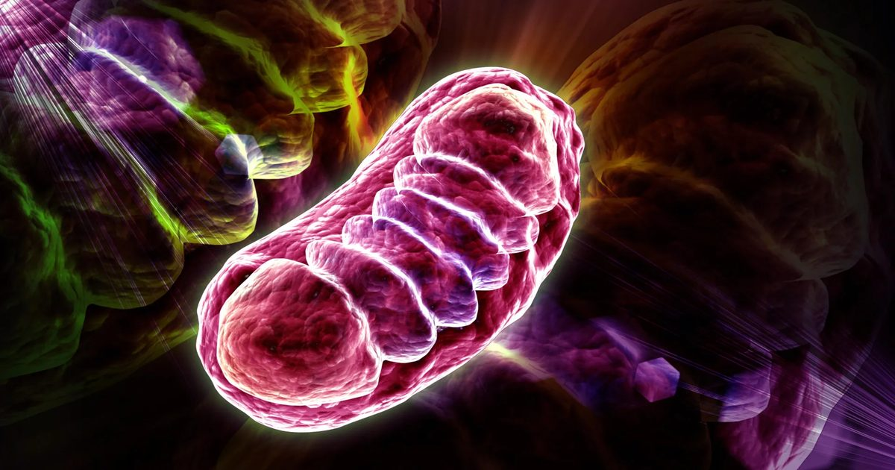

Лейцин не только наращивает мышечную массу. Он питает ваши клетки
Незаменимая аминокислота лейцин может стимулировать выработку клеточной энергии, защищая ключевые белки на митохондриях от разрушения.
Открытие раскрывает новую связь между питанием и метаболизмом, которая в конечном итоге может привести к новым подходам к метаболическим нарушениям и раку.